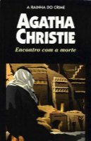

Encontro com a Morte
Appointment with Death
O crime parece perseguir Hercule Poirot: onde quer que o grande detetive se encontre, ali será cometido um assassinato. É o que acontece novamente enquanto ele está de férias no Oriente. Desta vez, a vítima é a senhora Boyton, uma mulher repulsiva e perversa, ex-vigia de uma prisão feminina. Os principais suspeitos são seus próprios filhos, que viveram submetidos à tirania da mãe. Mesmo sem nutrir qualquer simpatia pela morta, Poirot não admite que alguém queira fazer justiça com as próprias mãos, e decide cumprir seu dever. Assim, depois de uma investigação minuciosa e angustiada, ele descobre e revela, para assombro de todos, a insuspeitada identidade do assassino.